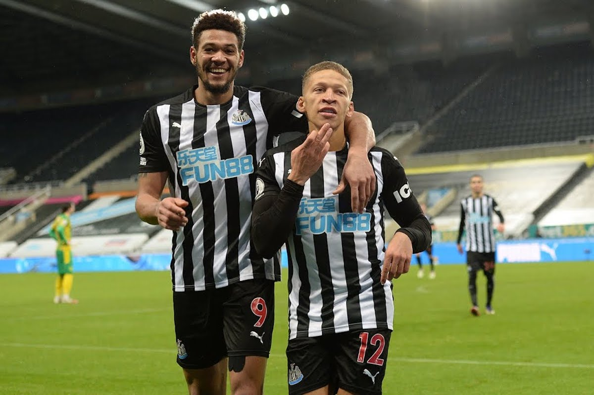

-
Explaining Newcastle United’s Overperformance
by Avi Rajendra-Nicolucci - December 16, 2020
|
avirn@umich.edu

source: Newcastle United
Newcastle United finished 13th in the Premier League in 2019/20, but their expected points total was the lowest in the league according to understat.com. They overperformed their expected tally by over 12 points! Only title winners Liverpool overperformed by more (+24).You may be saying to yourself isn’t it better to be lucky than good? In Liverpool’s case, yes (because they won the title). But in the case of a club like Newcastle, whose main goal is to remain in the Premier League, sustainability is the key to their long term success. The question is how do Newcastle keep beating the models?
After Rafa Benitez’s acrimonious exit from Newcastle United in the summer of 2019, Steve Bruce was appointed manager. Bruce was an unpopular choice amongst Newcastle fans who highlighted his lack of success in the Premier League and previous management of local rivals Sunderland. Bruce initially proclaimed his vision was to have Newcastle playing progressive, free-flowing football — a sharp contrast to the defensive pragmatism of his predecessor and a challenge given the talent at his disposal.
The start to the 2019/20 season was inauspicious with two consecutive defeats. First at home to Arsenal and then a 3-0 shellacking away to newly promoted Norwich City. Newcastle faced Tottenham away next and inexplicably pulled out a 1-0 victory with a brilliant goal from new signing Joelinton. These sorts of Jekyll and Hyde performances became the norm throughout the season as NUFC struggled to find an identity but found ways to nick results. A disastrous 5-0 loss at Leicester City was followed by an equally confounding 1-0 win at home against Manchester United.
Throughout each difficult spell of games Bruce came under pressure but his players continued to reiterate their admiration for him. Tactically, Bruce is far from cutting edge. But in the dressing room he has connected with the players — which is often referenced by pundits as the reason for Newcastle’s success. But we’re not here to discuss punditry.
If you look at the numbers from last season they don’t paint a pretty picture. Last season their raw xG and xGA numbers were 19th and 17th respectively. Gaining 12 more points than expected seemed unsustainable and thus Newcastle were a team that I and many others thought could be in a relegation battle this season. Unless Newcastle made changes to how they played it seemed like they were in for a rough season.
Instead, this season Bruce has silenced naysayers with 17 points from 11 games and has Newcastle comfortably above the relegation scrap. The Magpies are in 12th place ahead of the likes of Arsenal and Wolves, but once again they are overperforming their expected points. Newcastle has 3.69 points more than expected which is the fifth most in the Premier League. It’s possible that this overperformance is nothing but variance and Newcastle will soon face a day of reckoning from the xG gods. But I have noticed something about Bruce’s team that makes me wonder if something other than luck is causing this.
In the 2019/20 season the Magpies allowed 9.03 fewer goals than expected. They conceded the second most PsxG/Shot, meaning it faced the second best shot quality. But, it appears they were saved in part by their goalkeeper Martin Dubravka who saved 10 more goals than expected last season. This season they have flipped the script by facing the second worst shot quality in the Premier League and the sixth fewest xGA (conceded 2.44 less than expected). It seems last season an outstanding performance by Dubravka helped to mask their flaws and this season so far they have tightened up the back line by reducing the shot quality faced. This season reserve goalkeeper Karl Darlow has filled in well for the injured Dubravka as well. This could help to explain their overperformance.
In attack, it is less clear. Newcastle overperformed their xG by 1.51 last season (5th best) and they are overperforming by 2.44 goals this season (8th best). I thought perhaps Newcastle’s shot quality could lend some insight. They have the 9th best xG/Shot and G-xG this season and the 12th and 14th best respectively last season. I ran a regression of xG/Shot and G-xG in 2019/20 to see if there was any correlation between overperforming xG and the quality per shot. There was a slight positive correlation however, it appears not to be statistically significant. Summer signing Callum Wilson has been a fantastic addition with 7 goals (4 non-penalty) from 5.9 xG. But as a team, in nearly every attacking metric they are near the bottom of the table. Because the Magpies’ overperformance is less pronounced in attack there may not be a clear answer on their overperformance because it could just be luck.
One important thing to note however is that Newcastle have a relatively strong team on paper. They have relied heavily on individuals such as Allan Saint-Maximin, Miguel Almiron, Jonjo Shelvey and Callum Wilson. Basically Bruce’s strategy seems to be to have a strong defense and then rely on individual attacking talent to win games. The frustration from supporters comes from the lack of vision from Bruce. Even without a clear philosophy Newcastle have found a way to get results and stay out of the relegation battle. It’s not unreasonable for fans to ask for more of a plan from Bruce but it is important to recognize Bruce’s man management skills.
At first glance, Newcastle should be on the verge of relegation. But by going beneath the surface, you can see Newcastle have a solid defense and an outstanding keeper in Dubravka which helps to explain the overperformance in defense. The combination of a good dressing room atmosphere and a talented group of attackers has allowed Newcastle to grind out results against clubs at both ends of the table.
The question is will the Magpies revert to the mean in attack? Or, was Steve Bruce schooled in the dark arts of xG overperformance by Lucien Favre? Only time will tell.
Sources: xPts, xG and xGA from understat.com
xG/Shot, PsxG, PsxG +/-, PsxG/Shot from fbref.com and StatsBomb